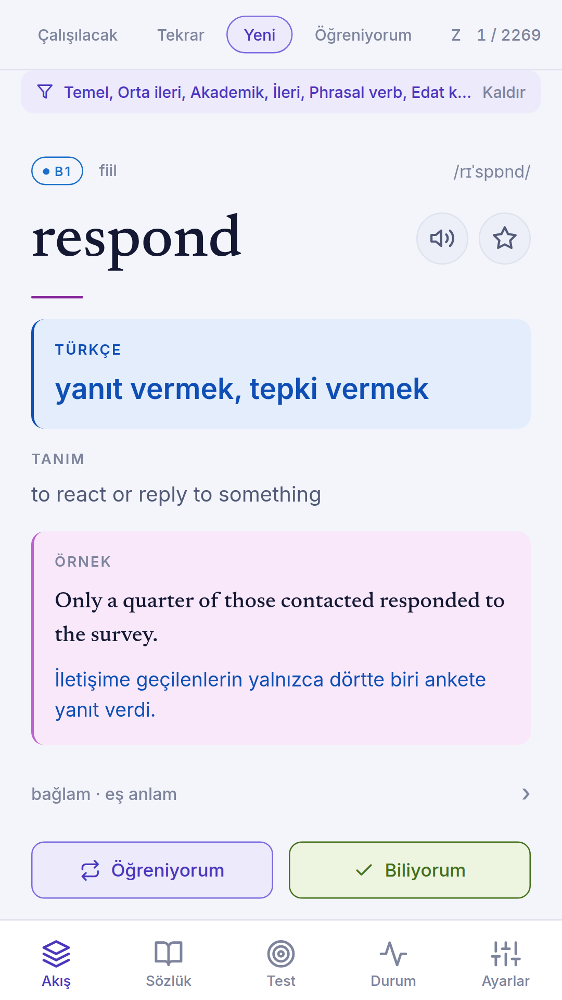
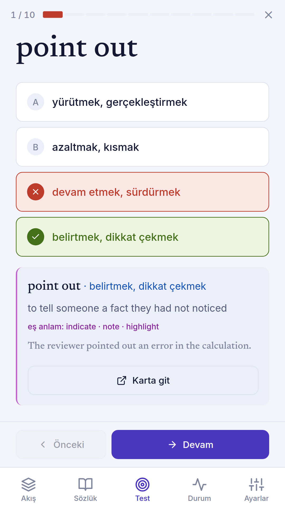
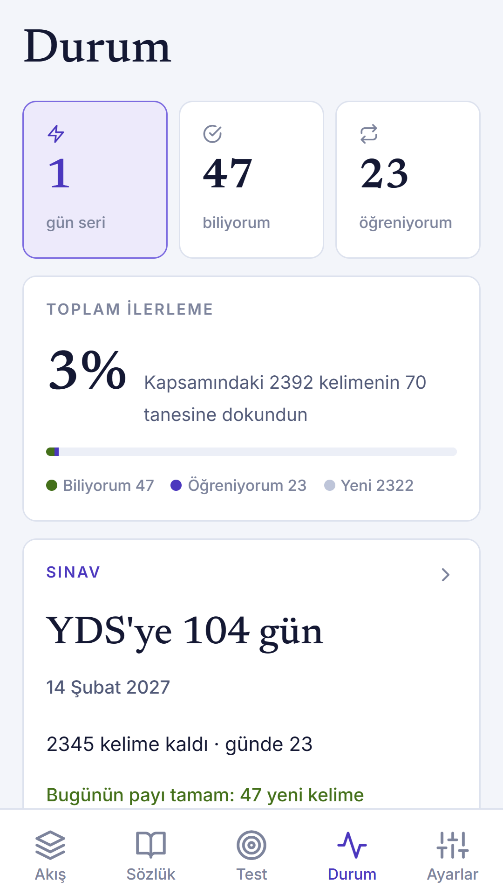

YDS · e-YDS · YÖKDİL
İngilizce kelime,
Türkçe karşılığıyla.
2597 akademik kelime ve kalıp; bildirimle, aralıklı tekrarla ve sınavın kendi soru tipleriyle. Reklamsız, hesapsız, internetsiz.
Yakında Google Play'de


Gün içinde bildirimle kelime
Günde kaç bildirim istediğini ve hangi saatler arasında geleceğini sen seçersin. Bildirimin altındaki Öğreniyorum ve Biliyorum düğmeleriyle uygulamayı açmadan işaretlersin.
Her kelime Türkçe anlamıyla
Türkçe karşılık, İngilizce tanım, örnek cümle ve çevirisi. Her kelimeye sınav metinlerinin dilinde ikinci bir bağlam cümlesi yazıldı.
Aralıklı tekrar
Doğru bildiğin kelimenin tekrarı 10 dakikadan beş haftaya uzar, yanıldığın kelime başa döner. Tekrar listesi bitince gün tamamlanır.
Sınavın soru tipleri
Eş anlam, boşluk doldurma, kelime türetme ve karıştırılan çiftler. Yirmi soruluk süreli deneme, yazarak ve dinleyerek çalışma modları.
Sınav tarihine göre plan
Tarihini girersen kalan kelime kalan güne bölünür; plandan önde mi geride mi olduğunu görürsün.
Verin telefonunda
Hesap yok, reklam yok, internet gerekmez. İlerlemen yalnızca telefonda durur; tek dosyalık yedekle yeni telefona taşırsın.
Dokuz kelime paketi
Temel (B1), Orta ileri (B2), Akademik (C1), İleri (C2), phrasal verb'ler, edat kalıpları, bağlaçlar, YÖKDİL Fen ve YÖKDİL Sağlık. İlk açılışta hangi sınava hazırlandığını seçersin; işine yaramayan paketler dışarıda kalır.